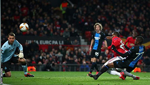
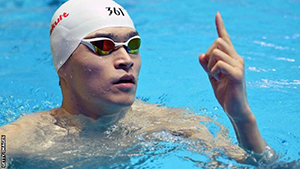
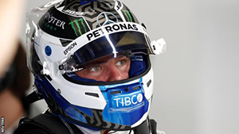

News

Europa League draw: Man Utd face LASK, Wolves play Olympiakos, Rangers v Bayer Leverkusen
6 hours ago
Manchester United have been drawn against Austrian league leaders LASK in the last 16 of the Europa League...

Sun Yang: Eight-year ban for Chinese Olympic champion
5 hours ago
China's three-time Olympic champion Sun Yang has been banned for eight years for missing a doping test in September 2018...

Formula 1: Valtteri Bottas fastest as testing concludes
2 hours ago
Mercedes driver Valtteri Bottas ended pre-season testing with fastest lap - both on Friday's final day and overall...
Laura Kenny crashes in World Track Championships omnium
30 minutes ago
Britain's Laura Kenny needed stitches after crashing in the opening race of the omnium at the Track Cycling World Championships in Berlin...